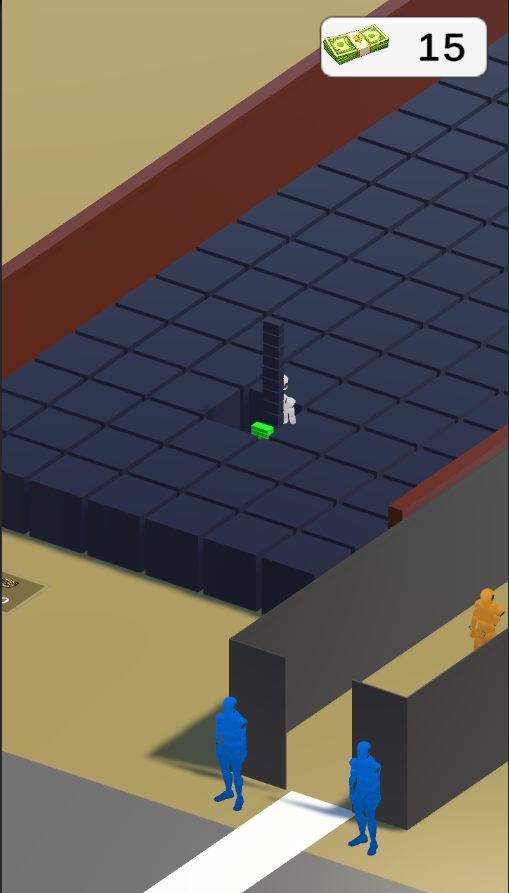
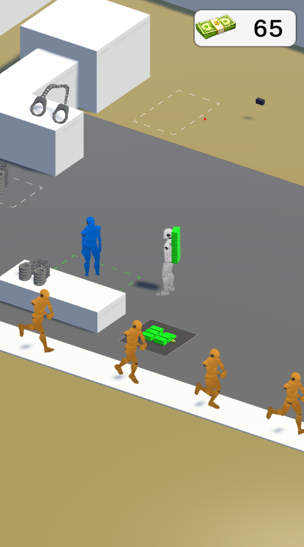

Prison Life
회사 채용 과제 · 1주일 개발


🎮 프로젝트 개요
회사 채용 과제로 1주일 안에 개발했습니다.
🔄 게임 플로우
광석 채굴
광부(MiningWorker)가 광석 구역에서 광석을 채굴합니다
수갑 제작
채굴한 광석을 기계에 투입해 수갑으로 변환합니다
수감자 구역 이동
간부(Jailer)가 수갑을 수감자 구역으로 운반합니다
수입 발생
수감자 수용 완료 시 골드 수입이 발생합니다
자동화 확장
무기 업그레이드 / 광부·간부 고용으로 자동화를 확장합니다
감옥 업그레이드
감옥 정원이 가득 찼을 때 골드를 지불해 수용 인원을 늘립니다
⚙️ 핵심 시스템
간부(Jailer)는 수갑이 쌓일 때까지 대기 → 수감자 구역으로 이동 → 전달 완료 후 반복. 코루틴 없이 UniTask async/await 패턴으로 구현했습니다. UniTask.WaitUntil()로 조건 대기를 처리해 코드 가독성과 흐름 제어를 모두 확보했습니다.
async UniTaskVoid AsyncWalkJailer() { while (true) { if (handCuffStack.Count == 0) { await AsyncMoveToPosition(handCuffZone.transform.position); await UniTask.WaitUntil(() => handCuffStack.Count >= HandCuffLine); } await AsyncMoveToPosition(prisonerZone.transform.position); await UniTask.WaitUntil(() => handCuffStack.Count == 0); await UniTask.WaitUntil(() => prisonerZone.HandCuffCount == 0); } }
수갑을 주는 쪽(IHandCuffGiver)과 받는 쪽(IHandCuffReceiver)을 인터페이스로 분리해 결합도를 낮췄습니다. 전달 로직이 구체 클래스에 의존하지 않아 수감자, 보관함 등 다양한 수신자에 재사용 가능합니다.
public interface IHandCuffGiver { void GiveHandCuff(IHandCuffReceiver receiver); } public interface IHandCuffReceiver { void ReceiveHandCuff(int amount); }
수갑이 수감자 머리 위로 날아가는 연출을 DOJump로 구현했습니다. 애니메이션 완료 콜백으로 수감자에게 수갑을 전달하는 로직을 체이닝해 타이밍을 보장합니다.
public void GiveHandCuff(IHandCuffReceiver _receiver) { var handCuff = _handCuffStack.Pop(); handCuff.DOJump( _receiver.HandCuffPosition, jumpPower: 1f, numJumps: 1, duration: 0.1f ).OnComplete(() => { _receiver.AddHandCuff(handCuff); }); }
방(Room) 데이터를 ScriptableObject로 외부화했습니다. nextLevel 필드로 레벨 체인을 연결해 업그레이드 시 다음 단계 데이터를 바로 참조합니다. MonoBehaviour에 수치를 하드코딩하지 않아 기획 변경에 유연하게 대응할 수 있습니다.
[CreateAssetMenu(fileName = "PurchaseZoneData", menuName = "Data/RoomData")] public class RoomData : ScriptableObject { public int maxCount; public RoomData nextLevel; }
감옥 정원이 가득 차면 골드를 지불해 수용 인원을 늘릴 수 있습니다. RoomData.nextLevel을 참조해 업그레이드 비용과 최대 수용 인원을 단계별로 적용합니다. 업그레이드 버튼은 골드가 부족하거나 정원이 차지 않으면 비활성화됩니다.
수갑 아이템처럼 반복 생성·파괴되는 오브젝트는 Unity 내장 ObjectPool<T>로 재사용했습니다. Destroy 대신 pool.Release()를 호출해 GC 부하를 줄이고 런타임 메모리를 안정적으로 유지했습니다.
🐛 트러블슈팅
// Before: 타이밍 불일치로 시각 버그 obj.transform.DOMove(target.position, 0.4f); _stack.Pop(); // After: 애니메이션 완료 후 Pop await obj.transform.DOMove(target.position, 0.4f).AsyncWaitForCompletion(); _stack.Pop();
📁 폴더 구조
Assets/Scripts/ ├── Controller/ # JailerController, MiningWorkerController, ... ├── Manager/ # Managers, GameManager, PoolManager, UIManager, ... ├── Data/ # PurchaseZoneData, RoomData, WeaponData (ScriptableObject) └── Interface/ # IHandCuffReceiver, IHandCuffGiver
💬 회고
잘한 점
- UniTask async/await 패턴으로 코루틴 없이 NPC 루프 구현
- 인터페이스로 수갑 전달 시스템을 유연하게 설계
- ScriptableObject로 데이터와 로직 분리
아쉬운 점
- UI 바인딩 미완성 (빠른 프로토타입 우선)
- DOTween 타이밍 버그를 Delay(500ms)로 임시 해결 → AsyncWaitForCompletion()으로 개선 필요
- 1주일이라는 짧은 기간 안에 완성도보다 동작 우선으로 개발